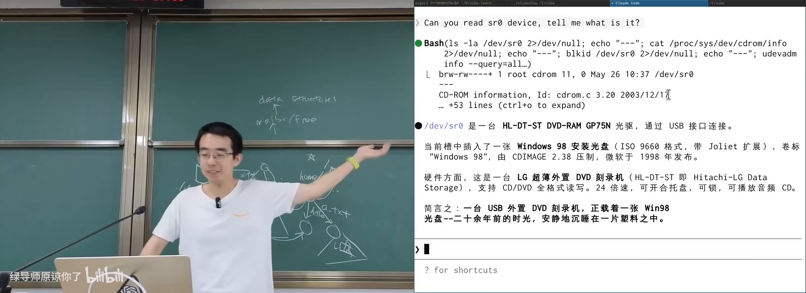
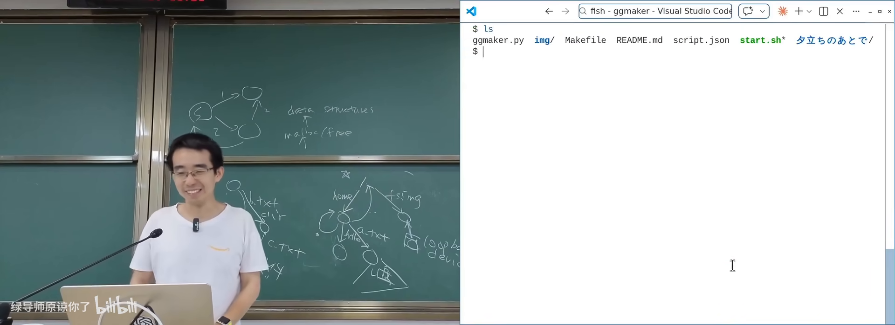

原视频：Bilibili · BV1hAGr6vEi9（时长约 79 分钟） 课程：南京大学《操作系统原理》（2026）第 24 讲 整理说明：本书由视频字幕经 AI 重构而成；口语已转为书面语；关键时间点标注 (参考时间)，截图卡片可跳转视频对应位置。
1. 从块设备到文件：为何还要一层抽象
(参考时间: 00:00)
上节课把存储设备抽象成 read_block / write_block（外加等待落盘等）。设备再简单，也不该让进程直接抢设备文件——多进程共享一个巨大字节序列，就像 malloc 实验里的共享堆，冲突与同步会把系统搞乱。
类比内存：
| 层次 | 物理 | 虚拟抽象 | 之上 |
|---|---|---|---|
| 内存 | DRAM 条 | 虚拟地址空间（MMU） | malloc/free、数据结构 |
| 存储 | 块设备 | 文件（变长字节序列） | 目录树、应用数据 |
文件（file，计算机中可变长的字节序列抽象）：现实里是“固定于纸张等载体的信息记录”；在系统里是 vector of byte，支持 read/write/lseek/truncate 等，通过 fd 访问。
1.1 PID 不友好，路径才好用
进程有 PID，数字对程序够用、对人不友好。若 open 全是 open(176358)，人类无法使用。图书馆用分类层次（中图法：大类→子类→书架）组织信息——文件系统同理：目录树。
数据结构视角：
/
├── home → 目录节点
│ ├── . → 指向自己
│ ├── .. → 指向 /
│ └── a.txt
.当前目录，..上级目录（UNIX 把功能糅进目录项）；- 以
.开头的名字约定为隐藏文件（ls默认过滤；ls -a才显示）——BusyBoxls里往往是判断d_name[0]=='.'后continue的一行逻辑； - OS 不区分“隐藏”，是工具层的约定。
文件系统可以管理几乎一切信息（制度文档、轨迹、Agent 可读的世界状态）——层次索引是非常强的抽象。
1.2 Windows 的隐藏对象树
Windows 也有更底层的对象根（非盘符路径）：设备、驱动、\\server\share 网络路径等。A:/B: 是历史上的软驱，系统盘才从 C: 开始；用户看到的 C:\ 只是投影。向前兼容导致补丁层叠——普通用户无感，做系统工具的人要面对。
2. 目录树的挂载（mount）
(参考时间: 00:00–00:38:25 主体)
世界上到处都是目录树：本地分区、U 盘、网络盘。OS 必须提供 API，把另一棵树接到全局命名空间的某个节点上。
2.1 mount 系统调用
mount（把某个存储上的文件系统目录树接到现有目录树某节点）语义：
- 通常要求源是块设备（或等价的 loop 设备）；
- 挂载后对该路径的读写反映到真实设备；
- 只读介质（光盘）会
mount为 read-only。
最小 Linux 演示：只有 initramfs 与 minimal.S 时，需要执行挂载才能用上真实磁盘上的文件系统；启动链路里还有 switch_root 等步骤。
2.2 课堂演示：Win98 光盘
插入光驱 → lsblk/块设备列表出现 sr0 等：
- AI/工具解释 ISO9660：在固定偏移找
CD001一类标识，定位主描述符结构； mount /dev/cdrom /mnt（只读警告）；- 可见
autorun.inf（Windows 自动播放）、README等； - 中文编码可能是 GBK，需
iconv转 UTF-8； strace mount：大量 ioctl——确认块设备、读容量、查光驱状态（无盘则失败重试）；eject退出光盘同样是 ioctl（如 CDROMEJECT）。
操作系统里没有魔法：要么是 well-defined 系统调用，要么是驱动替你处理的设备语义。
2.3 挂载“一个文件”：loop 设备
实验常下载 fs.img（磁盘镜像文件）再挂载。问题：mount 要的是 block device，普通文件不是。
方案：loop device（回环设备：把对块设备的读写转发到某个文件）：
1. 应用探测镜像内文件系统类型（如 vfat）
2. open("/dev/loop-control")
3. ioctl(LOOP_CTL_GET_FREE) → 分配 loopN
4. ioctl(LOOP_SET_FD) 等：绑定镜像文件描述符
5. mount("/dev/loopN", target, fstype, ...)
lsblk 里会看到多个 loop0, loop1...（snap 等也会占用）。文件系统类型在系统调用参数里必须给出；探测发生在用户态 mount 工具，OS 对非法格式直接拒绝。

mount：设备/loop 文件接入全局目录树在 B 站打开 (00:25:00)
2.4 FHS
Linux 有 FHS（Filesystem Hierarchy Standard，规定 /usr、/home、/mnt 等顶层目录含义的标准）。macOS 内核是 UNIX 传统却不完全按 Linux FHS。标准有点“过时”，但仍提供共同语言。
3. 目录树 API
(参考时间: 00:38:25)
3.1 增删改查与 glob
对目录树的系统调用包括：创建/删除目录、遍历（getdents64 等）、路径解析下的 open 等。
通配符（glob）如 */*.conf 往往是 shell 展开后再 exec，不直接对应单一系统调用；包在 bash -c 里 strace 可见大量 open + getdents。AI 工具的 glob/grep 也是同一类目录遍历能力。
3.2 硬链接（hard link）
文件在数据结构上是带名字的指针；同一 inode 可以有多个目录项。
ln a.txt b.txt # 或 link(2)
ls -li a.txt b.txt # 相同 inode 编号
- 改
a.txt内容，b.txt同步变（同一对象）； rm实际是 unlink：去掉一个名字并减引用计数；- 计数到 0 才回收数据；
- 不能对目录做硬链接（否则易成环，引用计数失效，树与盘“脱钩”）。
3.3 符号链接（symbolic link / symlink）
符号链接（内容为“去哪找”的路径字符串的特殊文件）：
- 可跨文件系统、可指向目录、可成环、可指向不存在的路径（悬空后若目标回来又可用）；
- 路径解析时自动拼接目标路径；
- Windows 快捷方式语义更复杂（盘符变化后仍尝试定位目标）。
课堂演示：用 symlink 实现 Galgame 式目录状态机——每个状态一个目录，选项是符号链接，cd 即选择分支；pwd 路径即历史；cd .. 可回溯。说明 symlink 是构建虚拟目录视图的强力工具。

符号链接：目录状态机与 Nix 风格环境在 B 站打开 (00:50:00)
3.4 与 Nix 的联想
内容寻址存储 + generation：所有软件版本放进 store，用链接拼出环境；只增不减，可回滚——与 append-only + persistent data structure 的思想同构。今天可以让 AI 直接生成 shell.nix 等，无需先背语法。
4. 文件的属性
(参考时间: 00:57:56)
4.1 元数据一览
ls -l / stat 可见或推断的属性包括：
- inode 编号（文件系统内唯一 ID，类似“文件的 PID”）；
- 类型：目录 d、符号链接 l、管道 p、字符设备 c、块设备 b、普通文件 -；
- 权限位：user / group / other 各 rwx（读/写/执行）；
- owner / group；
- 链接数、时间戳、大小等。
chmod 777 a.txt # rwxrwxrwx
chmod 000 a.txt # 即使 root 之外不可访问；执行 chmod 仍可改回
权限不足时 open 在系统调用层即失败（strace 可见 EACCES）。FAT 等早期文件系统甚至没有 POSIX 权限模型。
4.2 隐藏与 policy 的局限
UNIX 的“隐藏”只是命名约定；Windows 属性勾选类似。你真正想要的可能是复杂 policy（“仅当我一个人时才显示学习资料”）——通用 OS 不提供，因为需要判定环境。这是产品与系统设计的空隙。
procfs 的“欺骗”：/proc 下对象多半不是磁盘上真文件，而是内核数据结构（如 task_struct）在 getdents/open 时动态投影出来的幻觉——目录树 API 背后可以是任意实现。
4.3 extended attributes（xattr）
扩展属性（挂在文件上的 key-value 元数据）：
setfattr -n user.author -v "..." a.txt
getfattr -d a.txt
cp --preserve=xattr ...
- 可存图标、下载进度、签名、语义标签等（macOS 下载中的图标形态等）；
- 拷贝不友好：普通
cp可能静默丢掉 xattr；目标文件系统（如 FAT）不支持时也会丢； - 适合：向量检索索引、Agent 工具的语义元数据（vector FS 等）。
4.4 ACL
rwx 三组权限较粗。ACL（Access Control List，按用户精细授权的访问控制表）可表达“除某人外都可读”等。设计问题：owner 是否应能 deny 自己？root 是否应 bypass？（通常 root 绝对权限，否则可被恶意占满磁盘且无人能删。）概念存在即可在需要时让 AI 帮你落地。
5. 小结
flowchart TB
B[块设备 read/write block]
L[loop device 等包装]
F[文件系统：inode + 目录树]
M[mount 接入全局命名空间]
A[API：open/读写/目录 CRUD/链接/stat/xattr/ACL]
B --> L --> F --> M --> A
本讲是人与普通程序使用的文件系统 API；下一讲将讨论程序与 AI Agent 使用的文件系统视角——更少见，但是现代系统与 Agentic 工具链的基础。
附录：概念补给
文件系统（本讲语境）
- 是什么：在块设备上组织“文件 + 目录树”的一层软件抽象。
- 课上为何出现：多进程共享存储需要命名与并发管理。
- 和什么像：图书馆编目系统——书在库房，你通过索引找到书。
mount
- 是什么：把一个文件系统目录树接到现有树的某个节点。
- 课上为何出现：U 盘、光盘、网络盘进入全局命名空间的唯一正规方式。
- 和什么像：在书架预留位置“挂”上另一家图书馆的分馆入口。
FHS
- 是什么：Linux 文件系统层次标准（/usr、/home 等含义）。
- 课上为何出现：目录树的共同语言。
- 和什么像：城市里“路/街/巷”的命名规范。
inode
- 是什么：文件系统里标识文件对象的编号与元数据载体。
- 课上为何出现：硬链接即多个名字指向同一 inode。
- 和什么像：书的 ISBN——多个书名条可以指向同一本书。
硬链接 hard link
- 是什么：同一 inode 的额外目录项名。
- 课上为何出现：省空间共享同一数据；unlink 只减引用计数。
- 和什么像：同一本书在两个索书号下都能找到。
符号链接 symlink
- 是什么：内容为目标路径字符串的链接文件。
- 课上为何出现：跨文件系统、拼环境（Nix）、目录状态机。
- 和什么像：便签上写着“真正的文件在 3 号柜”。
loop device
- 是什么：把文件伪装成块设备的内核机制。
- 课上为何出现：挂载磁盘镜像
.img实验的前提。 - 和什么像：把一叠电子照片插进“虚拟光驱”再当光盘用。
getdents / 目录遍历
- 是什么：读取目录项的系统调用，
ls等工具的基础。 - 课上为何出现：glob、工具链背后都是目录 API。
- 和什么像：翻开图书馆抽屉里的一叠卡片。
引用计数（文件语境）
- 是什么：有多少目录项指向该 inode。
- 课上为何出现：解释
rm为何是 unlink，而非立刻毁数据。 - 和什么像：最后一位读者退卡后书才下架。
权限位 rwx / mode
- 是什么：按 user/group/other 控制读、写、执行。
- 课上为何出现：文件属性对 OS 行为的影响（execve、open）。
- 和什么像：门禁卡分级：业主、家人、访客。
ACL（访问控制列表）
- 是什么：对单个文件按主体精细授权的机制。
- 课上为何出现：mode 三组权限不够用时的扩展。
- 和什么像：门禁名单上逐个写人名，而不是只分“住户/外人”。
extended attributes（xattr）
- 是什么：文件上的任意 key-value 元数据扩展。
- 课上为何出现：隐藏 policy、语义标签、Agent 友好索引。
- 常见误解：
cp默认不一定保留；FAT 等可能不支持。 - 和什么像：书末夹页写备注——换书袋时容易掉。
procfs
- 是什么：把内核对象投影成文件树的特殊文件系统。
- 课上为何出现：目录 API 可以完全是“动态幻觉”。
- 和什么像：镜子里的仪表盘——看起来是实体，实际是投影。
书架 Shelf 流水线生成 · 内容衍生自 B 站公开课程视频 BV1hAGr6vEi9